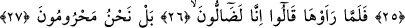
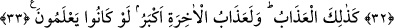

ÂHİRET AZÂBI
DAHA BÜYÜKTÜR
17. Biz, vaktiyle «bahçe sâhipleri»ne belâ verdiğimiz gibi, onlara da belâ verdik.
Hani onlar (bahçe sâhipleri), sabah olurken (kimse görmeden) onu (mahsûllerini)
devşireceklerine yemin etmişlerdi.
18. Onlar istisnâ da etmiyorlardı.
19. Fakat onlar daha uykudayken Rabbinin katından (gönderilen) kuşatıcı bir
âfet (ateş) bahçeyi sarıverdi.
20. (Ve hemen) bahçe kapkara kesildi.
21. (Beri tarafta ise) onlar, sabah olurken birbirlerine seslendiler.
22. Mâdem devşireceksiniz, hadi erkenden mahsûlünüzün başına gidin! (diye
birbirlerine seslendiler.)
23. Derken fısıldaşa fısıldaşa yola koyuldular.
24. Aman, bugün orada hiçbir yoksul yanınıza sokulmasın! (diye fısıldaştılar.)
25. (Evet, yoksullara yardıma) güçleri yettiği hâlde, onları yardımdan mahrum
etmek niyet ve azmi ile erkenden yola düştüler.
26. Fakat bahçeyi gördüklerinde: Mutlaka yolumuzu şaşırmış olmalıyız! dediler.
27. Yok yok, doğrusu biz mahrum bırakılmışız!
28. İçlerinden en mâkul olanı şöyle dedi: Ben size «Rabbinizi tesbih etsenize»
dememiş miydim?
29. Rabbimizi tesbih ederiz; doğrusu biz (kendi kendimize) yazık etmişiz, dediler.